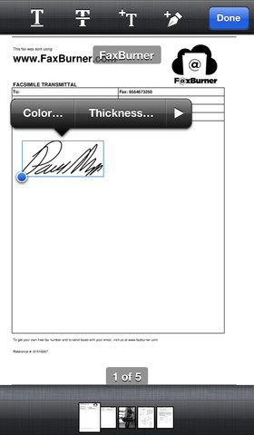
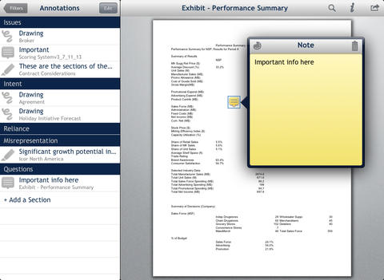

PricewaterhouseCoopers Australia
PSPDFKit powers the Value Accounts Holdings 2013 App - the premier reference on financial reporting in Australia. PwC used several advanced features of PSPDFKit to deeply integrate it into their app and make it more interactive. They used the delegate hooks to get notified whenever the user selects certain text and offer customize options in the popup menu to look up references. This saved them a lot of time compared to manually linking about 100 publications. They're using the annotation features to allow users to take notes, add text or scribble on the pages.

"PSPDFKit it is without a doubt the easiest iOS PDF framework to use on the market. It is solid and provides a wealth of features that are world class, and some of which aren't even offered by competitors. In addition, the example projects (particularly PSPDFCatalog) are a fantastic way to get started and it is something on which I rely to develop my app.
My users and stakeholders have been blown away by what I have produced with PSPDFKit, and my company approved the purchase of a license without a second thought - it was simply a no-brainer." - Alan Lahiff
Subtext
Subtext is a digital reading service from Renaissance Learning that spans the K12 curriculum and makes it easy for classroom groups to collaborate in the pages of any digital book, article or document. By enabling teachers to embed enrichment materials, assignments and quizzes into the text itself, continuous assessment is more transparent and a new level of individualized instruction is made possible.

"After evaluating a number of PDF libraries for Subtext, PSPDFKit came out a clear winner. The reader is feature-rich straight out of the box, but where it really shines is customization. The architecture is clean and modular, and for every feature I wanted to adjust, there was a way to do so. Subtext's in-book conversations between students and teachers were plugged in via a PSPDFAnnotationProvider. When I needed more details about what was rendered on screen, PSPDFGlyph gave me everything I needed. However, the best feature of all is the response time of the PSPDFKit team - never before have I seen a requested feature appear in a release the next day!" - Andy Cooper
Networx Online, Inc.
PSPDFKit powers the FaxBurner app from Networx Online. One key feature used here is PSPDFKit's signature support. Signatures can be added in a view provided by PSPDFKit and will the be stored securely in the device keychain. Users can manage their saved signatures in a convenient controller.
When user email the document, they can choose between the PDF with annotations or a flattened variant that will 'burn' their signature into the PDF so it's not editable afterwards.

"I used PSPDFKit to add autographing capabilities to FaxBurner, a Virtual Fax iPhone App that I am working on for one of my clients. Using this SDK saved me a lot of development time. The library is of top quality. It has a ton of functionality with very sensible defaults that work right out of the box. It takes just a few lines of code to get going. At the same time, it is very flexible and extendable in many ways. The demo code is very helpful in showing the endless ways it can be used and customized. On top of all that, Peter was very helpful, responsive, patient and open minded. He even added functionality I suggested to him within hours! I have nothing but praise for Peter and his work. I recommend PSPDFKit with no reservations or qualifications." - Judd Feuerstein
Relativity Binders
Relativity Binders gives partner-level attorneys with a Relativity login quick and easy access to their e-discovery documents whenever and wherever they need them. Binders allows you to download subsets of documents from Relativity to plan for depositions or client interactions, and conduct other case-related preparation on the go.

"Using PSPDFKit has been an enormous help to us. As a small development team, we were able to focus on the experience of the app and not on the internals of the PDF specification. I have no doubt that this framework saved us hundreds of hours of development work.
I'd also like to say thanks to Peter and the PSPDFKit team for all of the help and support we got during our development. The speed at which Peter responded to our emails, and even provided development builds to address a couple small bugs were mind boggling. It has been a real pleasure working with both Peter and the framework. " - David Bireta